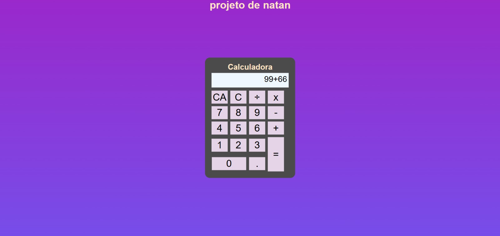
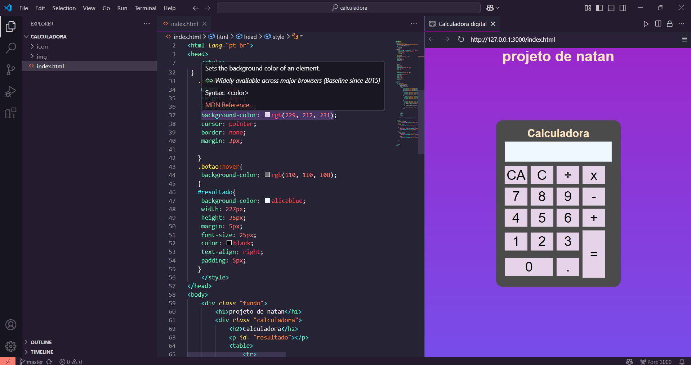

Sobre o Projeto
Esta calculadora foi totalmente desenvolvida apenas por Natan, visando a aprendizagem em html, css e js, ela utiliza apenas dos 3 elementos e consegue realizar calculos de some, subtração, multiplicação e divisão, a parte de estrutura foi feito em html, estetica e design feita em css e o sistema de calculos feito em js para saber mais do codigo, acesse o meu repositorio aqui.